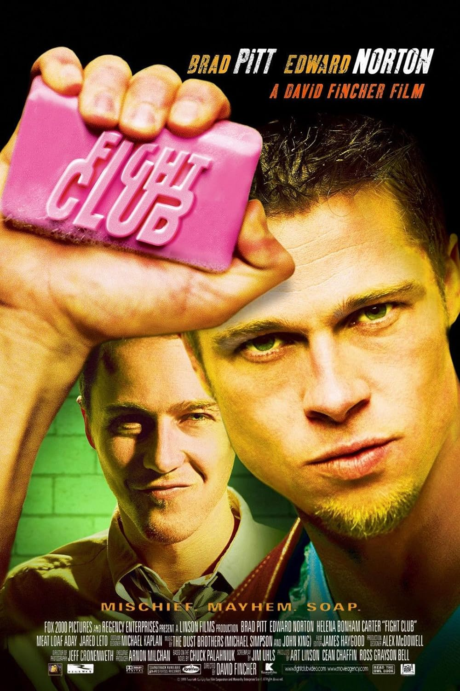
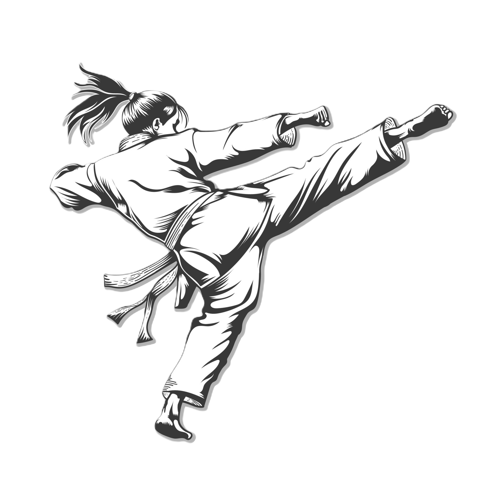
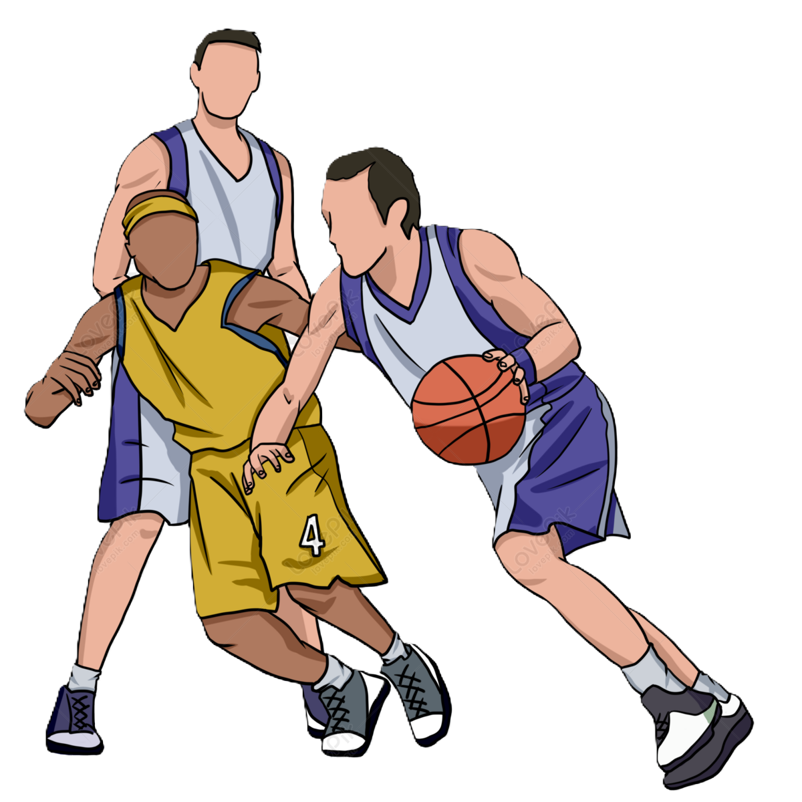
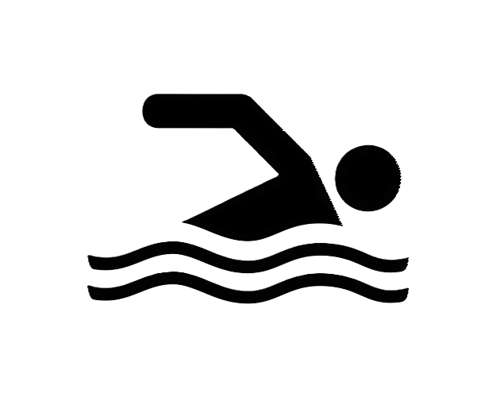

Хоби
Гледање филмови
Јас обожавам да гледам филмови. Сите филмови ги гледам на премиерите во кино. Омилен жанр на филмови ми се: трилер и мистерија. Едни од најомилените филмови кои досега сум ги гледал се: "Fight Club", "A Clockwork Orange" и "The Pianist". Исто така, после секое гледање на некој филм, практикувам да го оценам на апликацијата "Letterbox".


Спортување



Спортот од секогаш бил дел од мојот живот. Уште од многу мал имам тренирано различни спортови, тие се:
- Карате - 11 години
- Пливање - 7 години
- Кошарка - 2 години
- Теретана - 2 години